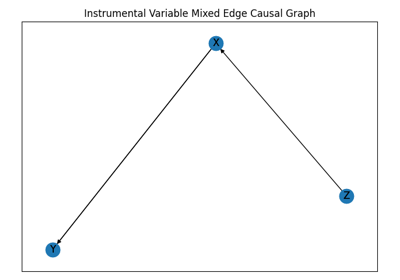
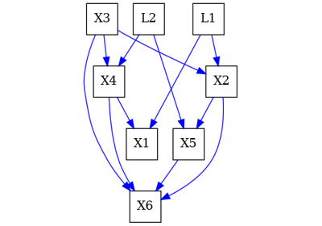

How to use pywhy-graphs with examples and tutorials#
To be able to effectively use pywhy-graphs, look at some of the examples here to learn everything you need! We give an overview of concepts in causal graphs.
Examples Gallery#
Simple examples demonstrating how to use causal graphs.
Networkx MixedEdgeGraph Examples#
Examples demonstrating how to use a MixedEdgeGraph (Note this is a WIP API with the intention of adding into networkx).

MixedEdgeGraph - Graph with different types of edges
MixedEdgeGraph - Graph with different types of edges
Introduction to causal graphs#

An introduction to Inducing Paths and how to find them
An introduction to Inducing Paths and how to find them

An introduction to causal graphs and how to use them
An introduction to causal graphs and how to use them

Visualization of causal graphs#

Drawing graphs and setting their layout for visual comparison
Drawing graphs and setting their layout for visual comparison

Drawing timeseries graphs and setting their layout
Drawing timeseries graphs and setting their layout